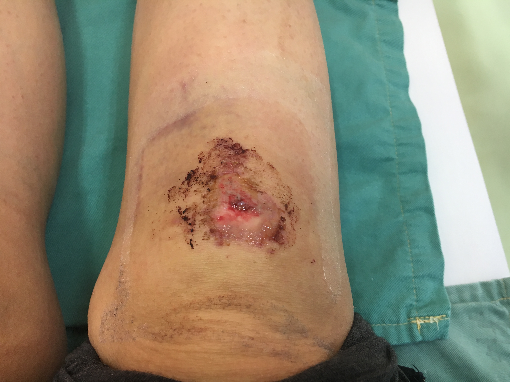
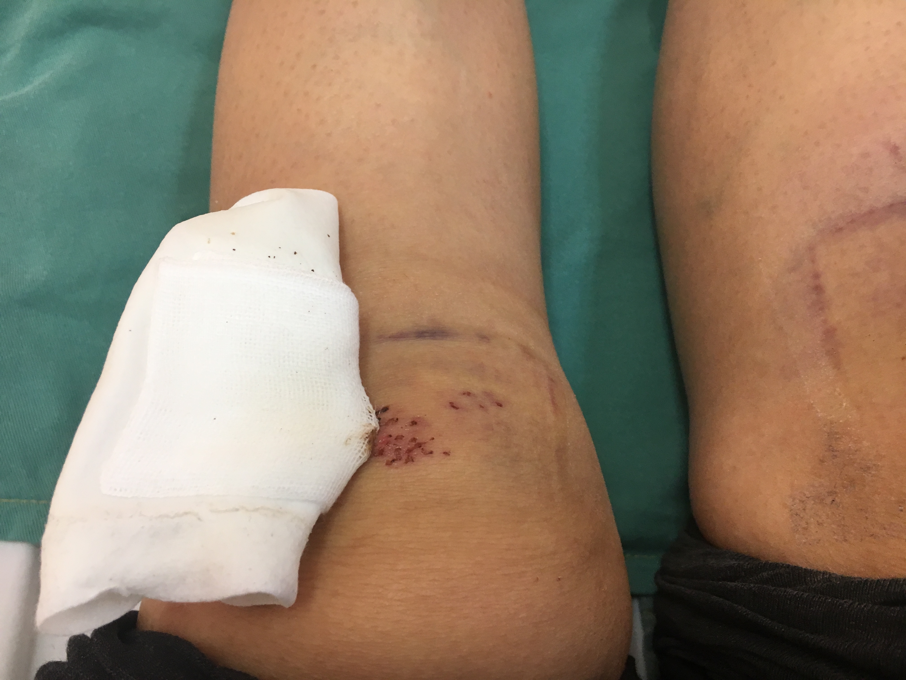
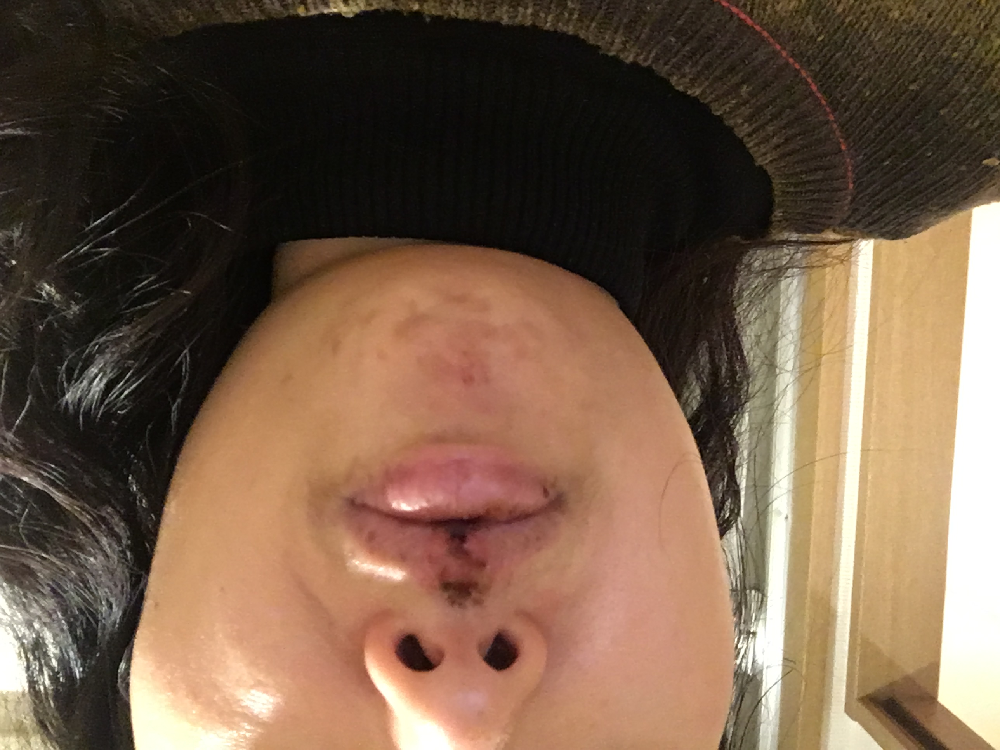
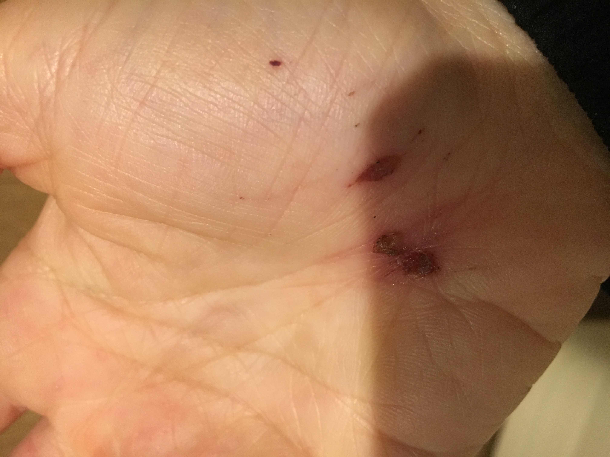
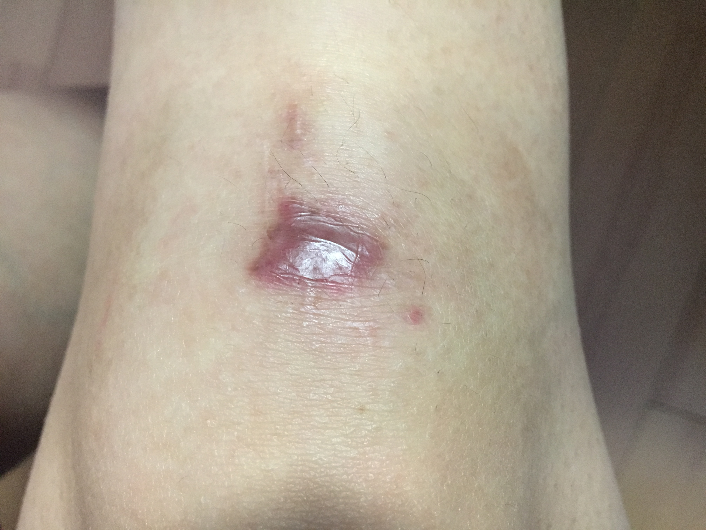
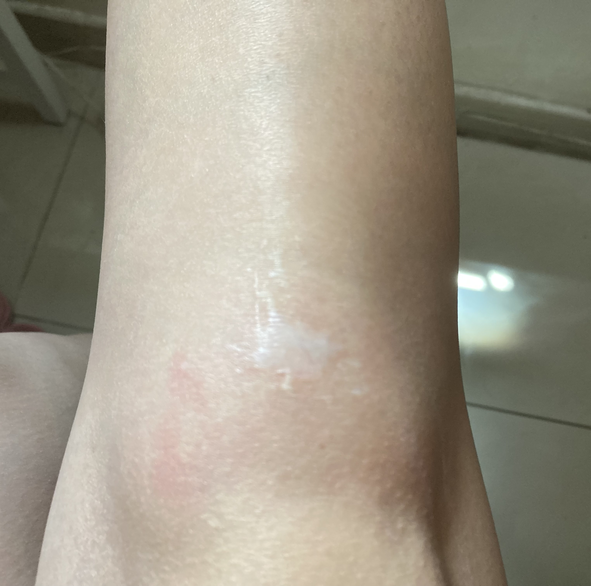
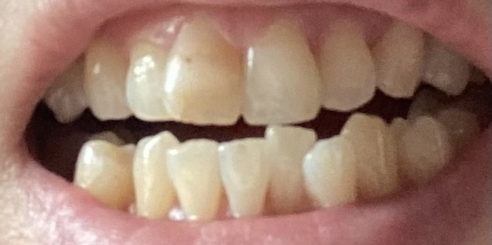
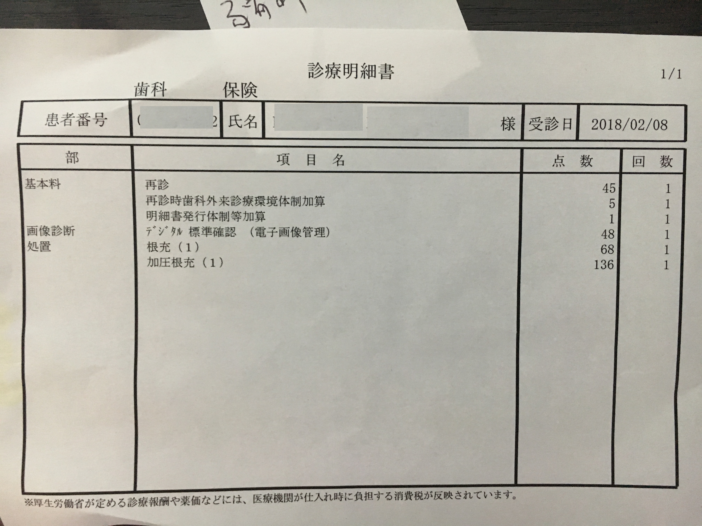
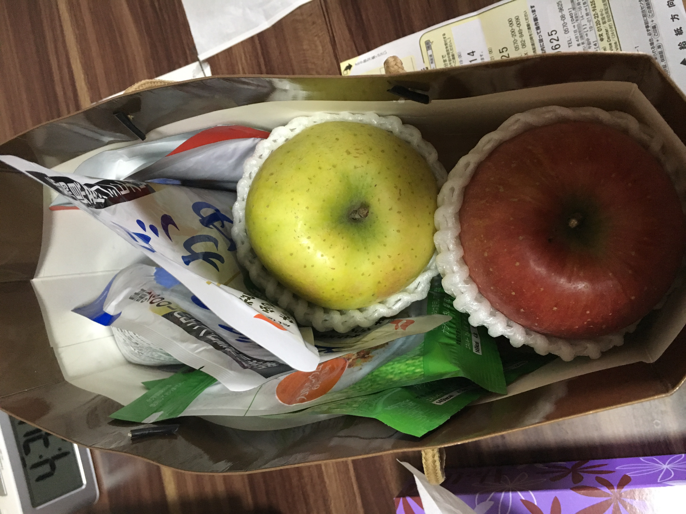
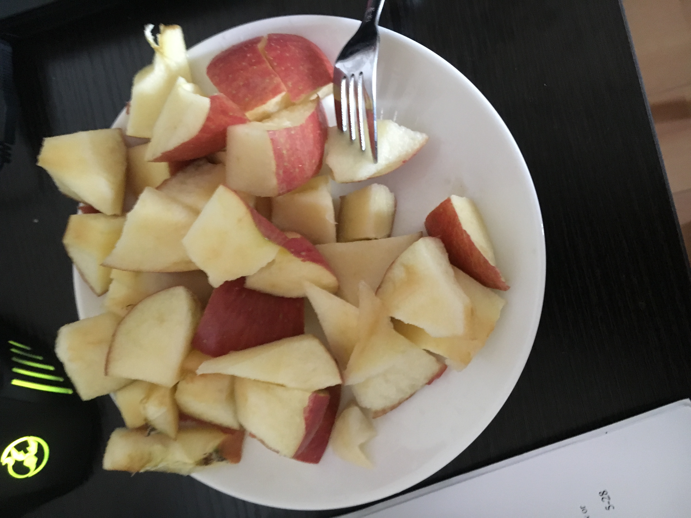

上一章
2018年1月20日周六，我如常的跑步，却发生前所未有莫名其妙的跑步意外。就在ブールバール跑去镜山时，在正常的路上毫无原因的摔倒，右边门牙都断了。当时虽然裤子破了，不过不是很痛，我还把断了的亚拾起来带回家。我慢慢的走回家，当时还好已经有教会，马上联系了教会的传道人小雪，她联系了徐阿姨送我去医院及帮我翻译，当日后来小雪和她的老公也来探望。我右膝盖的伤口挺深，现在还有疤痕，当时嘴唇都擦伤。医生说骨头有一点点缝要休息，不过我好像两三周后又去跑了。后来要去洗伤口，不过我觉得自己可以就自己买消毒药品消毒。当日周六中午，我把牙齿带过去他们给我处理好，然后帮忙给我打电话去附近的早志齿科，院长当日等我过去后才关门。这颗牙齿后来总共做了5次，每次做一点点终于完成。虽然说是真牙齿但明显有两截颜色，而且是下半截断了出来的正常，上半截明显不自然。

意外当日在医院等护士的时候拍。这是重灾区右膝盖。

左膝盖也有伤。

牙齿坏了，唇肯定免不了受伤。

右掌也擦伤了。

伤口结疤后的情况。摄于同年7月。

几年后颜色淡了，不过疤痕还在。后来我学了如果像除疤愈合时要用矽膠（silicone gel，我现在家里有备用）。

现在的牙齿，右侧门牙分界明显。拍照出来已经不算明显，真实很明显的。

总共看了5次牙医，这是其中一次治疗单子。日本牙医有保险，所以总共治疗费不是很高。

最后感谢小雪送我苹果及其他食品，当时我正想吃苹果，当然不能用门牙吃。


记得之后那周还办迎新会，我差点去不了。也感谢高桥同事主动问我有没有事能帮忙。
下一章